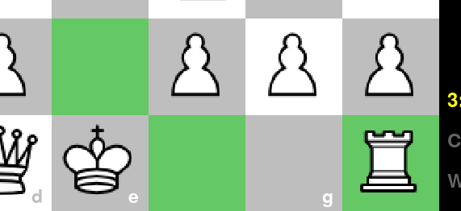

Aby poruszyć figurą/pionkiem, należy:
- Kliknąć lewym przyciskiem myszy na figurę, którą chcemy poruszyć:
Podświetlone zostaną pola, gdzie możliwy jest ruch. -
Nacisnąć lewym przyciskiem myszy na pole, gdzie chcemy przesunąć figurę.
Figura zostanie przesunięta, i w razie przypadku gry z przyjacielem, plansza zostanie obrócona.
Aby wykonać roszadę, należy:
- Kliknąć lewym przyciskiem myszy na króla:

Podświetlona zostanie wieża (lub wieże), w kierunku których można wykonać roszadę. -
Nacisnąć lewym przyciskiem myszy na wieżę, w kierunku której chcemy wykonać roszadę.
Roszada zostanie wykonana, i w razie przypadku gry z przyjacielem, plansza zostanie obrócona.